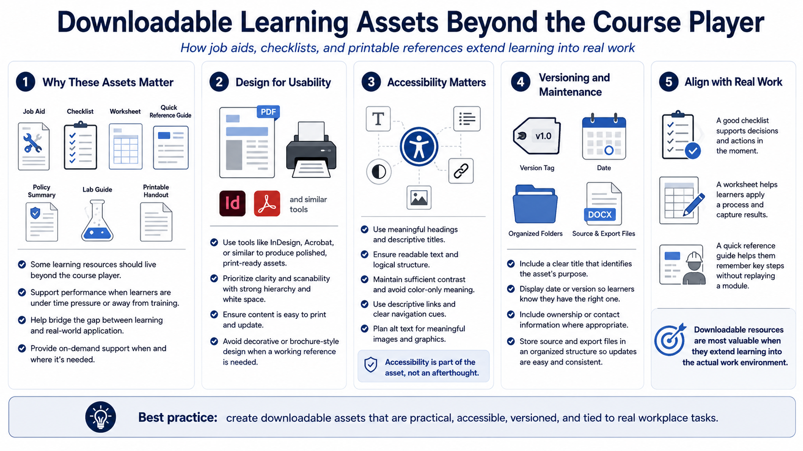

Documents, Job Aids, and Downloadable Resources
Connecting to LMS... Progress: in progress

Narration
Not every learning asset belongs only inside the course player. Job aids, checklists, worksheets, quick reference guides, policy summaries, lab guides, and printable handouts can support learners after the course is complete. These resources are especially valuable when the real task happens later, under time pressure, or away from the training environment.
Tools such as InDesign, Acrobat, or similar document-production tools can support polished downloadable resources at a high level. The design should prioritize usability. A job aid should be easy to scan, easy to print when needed, and easy to update. It should not be a decorative brochure if the learner needs a working reference.
Accessible document design matters. Use meaningful headings, readable text, logical structure, sufficient contrast, descriptive links, and alternative text planning for meaningful images. If a PDF is distributed, the team should consider whether it can be navigated and understood by learners using assistive technology. Accessibility is part of the asset, not an optional afterthought.
Versioning is important for downloadable resources because learners may save copies. Include a clear title, date or version where appropriate, and ownership information if the organization uses it. Keep source files and export files organized so updates can be made without rebuilding the entire course from scratch.
Align job aids with real workplace tasks. A good checklist supports a decision or action. A worksheet helps learners apply a process. A quick reference guide helps them remember steps without replaying a module. Downloadable resources are most valuable when they extend the course into the learner actual work environment.